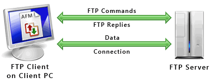

Introduction to CyberSecurity and Linux Command
What is CyberSecurity ?
Its an assessing threats and reducing risks
What is CIA ?
Confidential Integrity Availability
Confidential = control access to the information
Integrity = protect data form unauthorized changes
Availability = the authoriz users have access to resources and system
What is Social Engineering ?
Using psychological manipulation of people to give away sinsetive information or
security information and its happen in many different way
and the big responsibility on user to make sure to whom give the informations
What is DoS and DDoS ?
Its denial-of-service attack, prevent the user
from server services by interrapt the sent massegs to server and response to the user as server
What the difference between Dos and DDoS?
DoS --> attacker flood the server with TCP and UDP packet(single computer and single server).
To interrapt service and to make the respond slower
DDoS --> attacker attak the system from different locations
(multiple system target single system)
What is Ransomware?
Attack the logs device and encrypt its data or
lock the operating system and blackmail the owner of the institution or company in exchange
for returning the data or the system
What is Cryptography?
Its a way to protect the data while moving between the sender and the receiver
read more >>
Cloud Security
What we mean by cloud computing?
The ability of availability of computer resources and data storages without direct
active management by the user
Examples of cloud computing?
- AWS, Azure and Google cloud
* There is an applications that save and encrypt passwords such as: KeepPass and LastPass *
Cloud Computing type:
Public cloud --> available on the Internet for everyone, easy and fast
Private cloud --> make authorized access for user and internal network
its require physical data center staff for maintenance
Hybrid cloud --> its both public and private cloud. also can make authoriz access
Cloud computing services:
Saas (Software as a service) --> it is a way of delivering applications over
the Internet without the need of download software or hardware management
However, can save your work and update it
Paas (Platform as a service) --> platform that provide basics infrastructure, it is
complete development and deployment environment
laas (Infrastructure as a Service) --> infrastructure that provides a management service
for server and virtual applications
read more >>
Python
What is python?
Is an interpreted, high-level and general-purpose programming language.
In 2019 python comes in second top 10 of programming language in the world
read more >>
Network Security
What is IP?
Internet protocol, is a unique identifier for every machine using the internet
How its work?
When you access the Internet your IP address will be as key for you to access website,
send/receive mail …etc
It contains two part: Network ID and Host ID
The network ID identifies the network segment to which the host belongs
The host ID identifies an individual host on some specific network segment.
A host can communicate directly only with other hosts on the same network segment
Component of IP:
Combination of numbers called bit. IP contain 32bit, 32bit divided into 4 sections/parts
separated by single dot and these four sections can take any number in this range (0-255)

What is TCP/IP ?
It is multiple protocols help to transfer packet from sender to receiver.
TCP divided the packet into small pieces then send it one by one after that collect
it together to make sure its complete as one packet. IP it is responsible about address
destination
What is UDP and TCP ?
UDP (User Datagram Protocol), TCP (Transmission Connection Protocol)
both responsible for connection between sender and receiver
TPC --> check if the sender available to receive any packet then after the respond,
send the packet in order and it will be received in the same order
UDP --> send the packet to receiver without any alert to check-up and
the packet will received in unordered
When to use UDP or TCP ?
UDP is faster than TCP but TCP more reliable then UDP. If you need speed more than reliability,
you should use UDP instead of TCP. TCP has provisions for data packet sequencing,
acknowledgements, error detection, and correction
what is OSI layers?

What is OSI model and the benefit of using OSI model ?
OSI (Open System Interconnection), is a conceptual framework used to describe
the functions of a networking system. How the data work in each layer and between them
What is MAC address?
It is like a finger print but its for devices, each device has MAC address no one can change it.
se MAC address to identify the device into network. Consist of 6 part each part takes
two number in this range (0-9 and A-F). This range called “ hexadecimal system”
What DNS ?
DNS (Domain Name System), is to translate domain names into IP addresses, which computers
can understand
What is PTF?
PTF (File Transfer Protocol), its protocol used to transfer file from user to server inside
the network or transfer files between devices that support the protocol which translate the
file into format of operating system

What is the different between switch, router and hub?
Hub --> cfrom my study for CCNA certificate, the hub is old and rare to use these days.
Hub has many problems such as: when receive packet hub send this packet through all the port
even if the port it is destination or not. This way will make the unnecessary port busy for
nothing
Switch --> device in a computer network that connects other devices together. Using cables
to enable communication between different networked devices. If small company use switch
and connected directly with internet
Router --> use it to connect branches in different locations together such as: banks and
hospitals. Can be used to internet connection
What is RACI ?
RACI (Responsibility assignment matrix), it’s a matrix to distribute the task between the team work
and clarifies priority of work. The RACI contributes to arranging and organizing the project's
progress
R = Responsible
A = Accountable
C = Consulted
I = Informed
read more >>
Incident Response
What is sandbox?
sandbox is a testing environment that isolates untested code changes and outright
experimentation from the production environment or repository
What is CI\DC?
CI\CD (Continuous Integration and Continuous Delivery Pipeline), for example if you
have an application for social media and you update it then occurring some errors,
after few days appear new update for the same application fix all issues. This is CI\CD
in simple way
What is DMZ?
DMZ (DeMilitrarized Zone), is a network physical or logical used to connect hosts
that provide an interface to an untrusted external network [usually the internet] while
keeping the internal, private network [usually the corporate network] separated and
isolated form the external network. Its not secure 100% and you can determine authorize
access to this network
What is VPN?
VPN (Virtual Private Network), its private network can access public network and interact
with it but you need authorize access to this network
What is IR?
IR (Incident Response), it is a term describing the activities of an organization to identify,
analyze, and correct hazards to prevent a future recurrence. The security incident response team is
called in when attack response programs fail such as: System firewalls, Intrusion prevention system
and Network security firewalls
What is the role of security incident response team?
Preparation --> preparing to start respond to the threat
Detection and analysis --> determine the threat and analyze the necessary
data in order to take the necessary action and reduce the risk
Containment, eradication and recovery --> contain the threat in a specific network
and the rest of the networks are locked to protect it, then it is eliminated and
then we make sure that the affected network is recovered
Post incident --> ensure the safety of the network from any threat and check all
the ports. Also, it is possible to add more protection and then open the network
again to the rest of the networks
read more >>
Digital Forensics
What is captcha?
To verify the user is a human for example: I am not report, write the word or number,
match the picture with the word
What are Digital Forensics?
Is carried out when there is an electronic trespass on the property of others without
authorization and for the purpose of breaching privacy or sabotage (harm others)
When you start investigation in Digital Forensics must be attention to:
Document and write down step by step of investigation
Be careful with evidence and ensure is safe
* To know your interest and passion for digital forensic investigation, see the Saudi
Cybersecurity Authority and NICE (National Initiative for Cybersecurity Education) *
read more >>
SIEMs
What is SIEMs?
It is a system for monitoring data traffic in the network to find out if there
is suspicious movement
What is Raw Log Data?
know the data type that is moving in the network such as: TCP, FTP, UDP …etc
What is Normalize Raw Log Data?
Know the events, destination and port destination
What is SPL?
SPL (Search Processing Languages), language containing many commands, functions,
arguments, …etc which are written to get the desired results from the datasets in Splunk
read more >>
CyberSecurity Policies
What is UF?
Splunk UF (Universal Forwarder), we use it to forward the data to Splunk enterprise
What is Cybersecurity Strategy?
It’s a long-term plan for execute multiple tasks to achieve goals or specific goal.
The purpose is to raising the efficiency and ability of the cybersecurity department
to protect against cyber-attacks and threats
read more >>
Ethical Hacking, Penetration Testing
What is Scanning?
Determine the open port in the remote host
What is Enumeration?
Procedure to show large amount of information about specific device such as: IP address,
MAC address, operating system …etc
What is Nmap?
An open source used to discover hosts and services on computer network and if there is
an open port
What is Nmap Aggressive Detection Mode?
Gives a valuable information about the host also, do more investigation about the network
and discover any suspicious by using command such as:
-A --> activate aggressive detection
-O --> aggressive mode enables operating system detection
-sV --> version detection
-sC --> script scanning
What is OWASP?
OWASP (Open Web Application Security Project), is a list of web application security
vulnerabilities/threat
What is the top 10 OWASP?
Injection --> hacker spoofing the application by typing codes or programming
commands
Broken Authentication --> when the admin user hacked
Sensitive Data Exposure --> unsafe data, weak encryption or not encrypted at all
XML External Entities --> when user download malicious XML file
Broking Access Control --> when hacker reach to unauthorized resources
Security Misconfiguration --> using default password or a default script
Cross Site Scripting (XXS) --> when enter JavaScript in website
Insecure Deserialization --> hacker exploit the runtime when application convert
the byte stream into an object
Components with Known Vulnerabilities --> for example using unsecure library
Insufficient Logging/Monitoring --> if the hacker installs a cryptominer on the
server, the CPU load for that process will drastically increases. Also, if the
hacker start downloads a lot of data from the server it will show up as unusual
amount of outgoing network traffic
Penetration Testing Report should include :
Summary Executive
Approach Testing --> planning, discovery, attack (what tools or commands used) +
screenshot and reporting/documenting
What is the result from the attack, security vulnerabilities that were discovered
with security or priority level + screenshot
Recommendations and solutions to fill security gaps and raise the level of
cybersecurity in the entity (mentioned the sources)
What is netcat?
Is a general-purpose command-line tool for reading, writing, redirecting,
and encrypting data across a network using TCP or UDP
What is UFW?
UFW (Uncomplicated Firewall), is a program for managing a net-filter firewall
read more >>
Cryptography, CompTIA Security+
What is Cryptography?
It’s a process to encrypt plain-text to be unreadable only if the receiver have the
ability to decrypt the plain-text to cipher-text or have a special key (private key)
What is PAIN ?
Privacy --> by encrypt the text
Authentication --> by verify the access authentication
Integrity --> by hashing
Non-repudiation --> by ensure that neither side can be back out of
transaction by claiming it never took place
What is a Plain Text?
It’s a normal and readable sentence of words. It is the message its self
What is Cipher Text?
when using cryptography on text you must make this text save by encrypt it into
unreadable text, this text called cipher text
How Cryptography work?

Based on the image, when the message has been encrypted by any way the user used.
The message now is saved and no one can read it, otherwise you need to decrypt the
text
What is Symmetric and Asymmetric key?
When using cryptography there are two categories: Symmetric (private key) and
Asymmetric (public key)

Using the same key --> share the private key between sender and receiver
for both process encryption and decryption

Using different key --> use public key for encryption in sender side and
private key for decryption in receiver side so, the text will be encrypted
through transport only
What is Hash signature?
Is converting any text no matter how long it is into fix size text contain array
of numbers and letters through an algorithm. There is something called
“ Block Chain” which is several blocks, the first block called “Genesis Block”
contain transaction when combined produce unique hash. When create a second block
will combine the old hash in first block with second block hash to create a new
hash. This process keeps going on
* Each hash must be : unique and secure
*Each block chain will be : secure, immutable and transparent network

Input represent --> normal text / readable text
Hash Function represent --> algorithm that used
Output represent --> hash value
read more >>